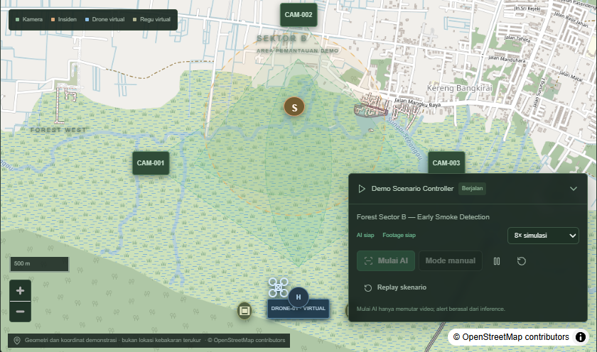
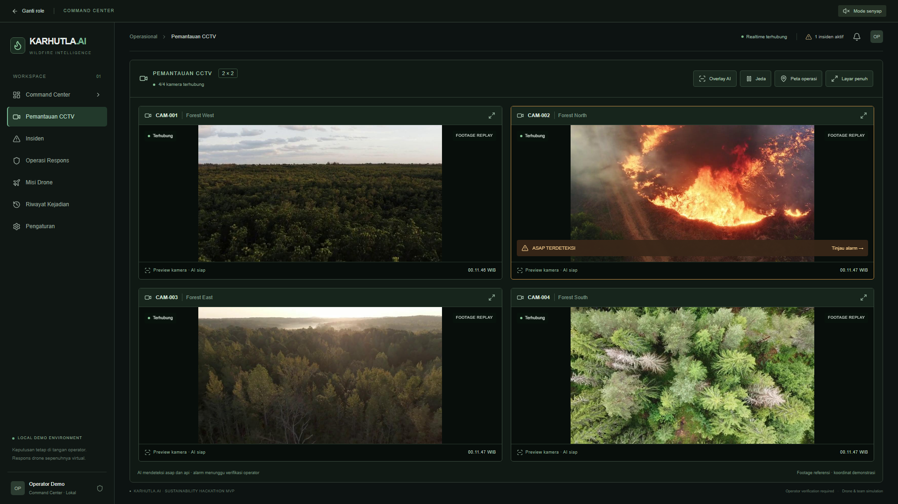
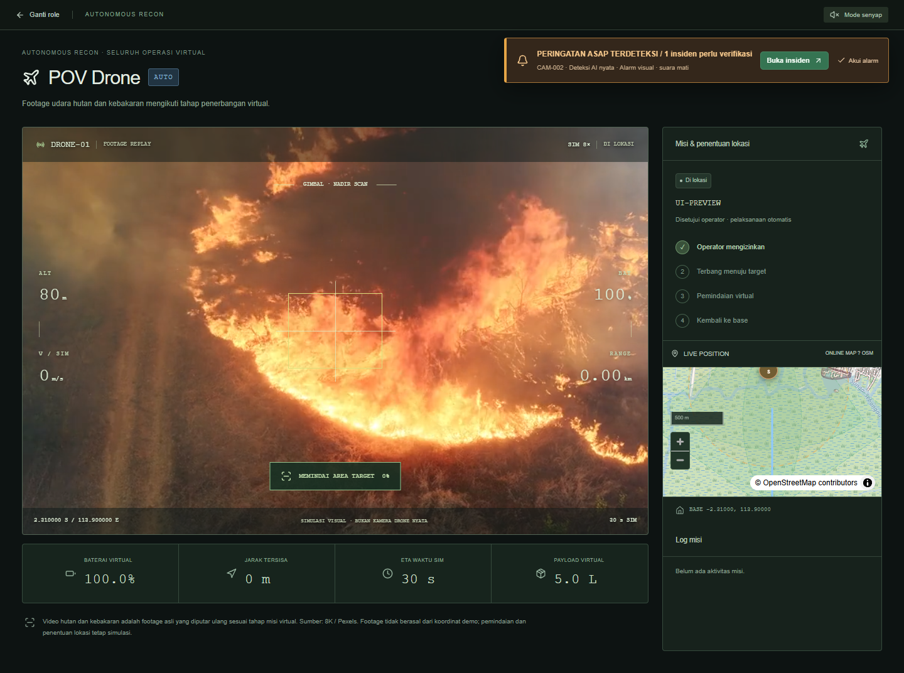
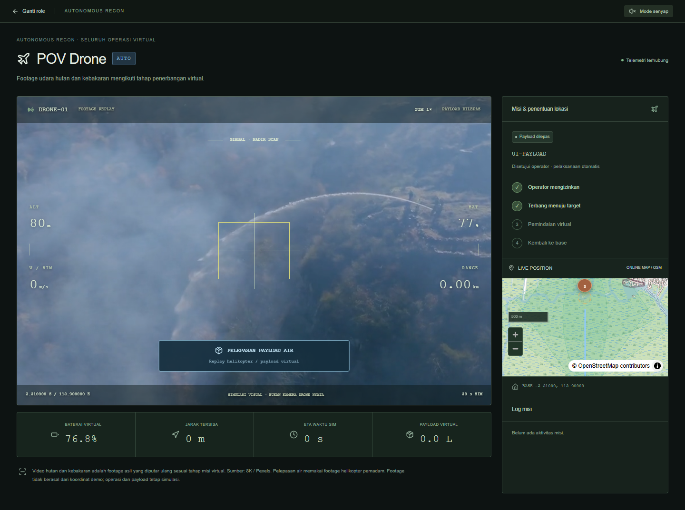

Pantau banyak sumber
Operator perlu meninjau kamera dan mengenali indikasi asap atau api yang layak diperiksa.
AI, verifikasi manusia, dan koordinasi penanganan dalam satu command center.

Informasi perlu menjadi
keputusan.
Keputusan perlu menjadi
tindakan.
Fokus masalah yang kami angkat: kesinambungan antara pemantauan, verifikasi, dan koordinasi respons.
Operator perlu meninjau kamera dan mengenali indikasi asap atau api yang layak diperiksa.
Alarm perlu disertai bukti visual, sumber kamera, waktu, dan perkiraan lokasi.
Penugasan, progres lapangan, dan hasil penanganan perlu tercatat dalam satu alur.
Dirancang untuk membantu pihak yang memantau, menangani, dan mengevaluasi kejadian.
Meninjau kamera, memeriksa evidence, menetapkan status insiden, dan mengizinkan respons.
Menerima penugasan regu, melihat koordinat perkiraan, dan memperbarui progres penanganan.
Meninjau riwayat kejadian dan laporan untuk mendukung evaluasi prosedur pemantauan.
Nilai utama MVP: menghubungkan deteksi visual dengan workflow operasional yang tercatat.
Pantau video dan tangkap frame untuk inference.
Validasi temporal dan simpan evidence kandidat.
Tinjau indikasi dan setujui tindakan respons.
Penugasan petugas dan misi drone virtual.
Catat status, aktivitas, dan penutupan insiden.
AI memberi indikasi. Operator memegang keputusan.
Persetujuan eksplisit sebelum misiPeluncuran, penerbangan, pemindaian, dan payload drone pada MVP sepenuhnya virtual.

Grid CCTV pada MVP
Inference YOLO pada frame video, dengan overlay AI dan snapshot evidence.
Kandidat masuk antrean untuk ditinjau operator.
Perbesar kamera dan tampilkan wall CCTV dalam layar penuh.
Kandidat AI memulai proses pemeriksaan. Operator menentukan tindak lanjutnya.
Periksa kategori, confidence, waktu, kamera, dan snapshot. Confidence bukan ukuran akurasi model.
Titik awal memakai arah kamera dan asumsi jarak. Operator dapat mengoreksi titik secara manual.
Konfirmasi insiden atau tandai alarm palsu. Penutupan kejadian tetap merupakan keputusan operator.
Kamera, sektor pantauan, insiden, resource, dan rute virtual.
Operator menugaskan; petugas menerima dan memperbarui status penanganan.
Pembaruan melalui WebSocket; pemulihan state melalui REST saat koneksi tersambung kembali.
Koordinat adalah demonstrasi. Perjalanan regu dan drone disimulasikan, bukan navigasi jalan.


Footage asli diputar ulang; penerbangan, lokasi, baterai, dan payload tetap virtual. Pelepasan air tidak otomatis menyatakan insiden teratasi.
Empat service lokal melalui Docker Compose: frontend, backend, vision worker, dan database.
Frame video dan preview pemantauan.
Confidence filter, validasi temporal, snapshot kandidat.
Insiden, dispatch, misi virtual, dan aktivitas.
Operator, petugas damkar, dan POV drone.
Kandidat yang dapat ditelusuri.
Class, confidence, bbox, timestamp, snapshot, dan fingerprint weights disimpan.
State yang dapat dipulihkan.
Riwayat tersimpan di database; REST membantu resinkronisasi setelah WebSocket reconnect.
Kontribusi yang ingin diuji: informasi yang relevan, koordinasi yang jelas, dan proses yang dapat dievaluasi.
Kandidat dan evidence membantu operator memusatkan perhatian pada indikasi yang perlu diperiksa.
Evaluasi data lokal untuk memahami deteksi yang benar, alarm palsu, dan indikasi yang terlewat.
Riwayat penugasan dan status membantu mengevaluasi alur penanganan bersama calon pengguna.
Tahap pengembangan yang diusulkan, dimulai dari validasi sebelum integrasi operasional.
Bangun dataset berlabel dari kondisi setempat; evaluasi asap, api, kabut, dan kondisi normal.
Uji RTSP nyata, kapasitas inference, koneksi, dan workflow bersama calon operator.
Kembangkan autentikasi, geolokasi tervalidasi, integrasi hardware, dan prosedur operasional.
Mari uji, validasi, dan kembangkan
KARHUTLA.AI untuk kebutuhan lapangan.
Dasar materi: README.md, ARCHITECTURE.md, DEMO_GUIDE.md, TEST_RESULTS.md · Dokumentasi proyek, 14–16 Oktober 2026.
Visual: screenshot aplikasi · Footage referensi Pexels, bukan rekaman Kalimantan · Peta © OpenStreetMap contributors.